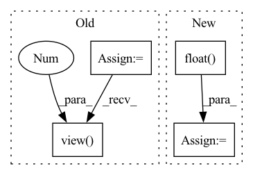

Pattern ID :13057
Before Change
stride=(self.patch_size, self.patch_size)) * self.patch_elems
exps_coord_sum = torch.nn.AvgPool2d(exps * self.coords, kernel_size=(self.patch_size, self.patch_size),
stride=(self.patch_size, self.patch_size)) * self.patch_elems
keypoint_tensor = exps_coord_sum / exps_patch_sum
keypoint_coords = keypoint_tensor.view( BW, 2 , self.num_patches) .transpose(2, 1)
if self.grid_sample:
norm_keypoints2D = normalize_coords(keypoint_coords, self.width, self.width).unsqueeze(1)After Change
BW = descriptors.size(0)
v_coords, u_coords = torch.meshgrid([torch.arange(0, self.width), torch.arange(0, self.width)])
v_coords = v_coords.unsqueeze(0).float() // 1 x H x W
u_coords = u_coords.unsqueeze(0).float()
detector_patches = F.unfold(detector_scores, kernel_size=self.patch_size, stride=self.patch_size) // BW x patch_elements x num_patches
softmax_attention = F.softmax(detector_patches / self.temperature, dim=1) // BW x patch_elements x num_patches
expected_v = torch.sum(self.v_patches * softmax_attention, dim=1)
expected_u = torch.sum(self.u_patches * softmax_attention, dim=1)In pattern: SUPERPATTERN
Frequency: 4
Non-data size: 4
Instances Fragment ID: 44038187
Project Name: utiasasrl/hero_radar_odometry
Commit Name: 0ac4b80234f9d24c28b8415ddc9e8372cac61d6b
Time: 2021-02-04
Author: keenburn2004@gmail.com
File Name: networks/keypoint.py
M Class Name: Keypoint
N Class Name: Keypoint
M Method Name: forward(4)
N Method Name: forward(4)
M Parent Class: torch.nn.Module
N Parent Class: torch.nn.Module
M File Name: networks/keypoint.py
N File Name: networks/keypoint.py
M Start Line: 30
M End Line: 58
N Start Line: 36
N End Line: 43
Before Change
x = x.view(b*c, 1, h, w);
print(self.Patt)
print(x.size())
x = self.Patt(x);
//x = F.relu(x); //// x[:,:,1] = -1/N0 ????
x = x.view( b*c,1 , self.M*self.n) ;
return x
def forward_maptoimage(self, x, b, c, h, w):After Change
//--Acquisition
x = x.view(b*c, 1, h, w);
x = torch.matmul(self.H,x)
x = x.float()
//res_im = x.numpy()
//plot_im2D(res_im[0][0])
//x = F.relu(x); //// x[:,:,1] = -1/N0 ????
//x = x.view(b*c,1, self.M*self.n); Fragment ID: 44038202
Project Name: openspyrit/spyrit
Commit Name: 400533296052bd41c261f651c5403720e48ca5e9
Time: 2021-09-29
Author: sebastien.crombez@univ-lyon1.fr
File Name: spyrit/learning/model_Had_1D_DCAN.py
M Class Name: compNet_1D_test_product
N Class Name: compNet_1D_test_product
M Method Name: forward_acquire(6)
N Method Name: forward_acquire(6)
M Parent Class: nn.Module
N Parent Class: nn.Module
M File Name: spyrit/learning/model_Had_1D_DCAN.py
N File Name: spyrit/learning/model_Had_1D_DCAN.py
M Start Line: 563
M End Line: 568
N Start Line: 337
N End Line: 339
Before Change
def norm(self, edge_index, num_nodes, edge_weight, improved=False, dtype=None):
if edge_weight is None:
edge_weight = th.ones((edge_index.size(1),),
dtype=dtype,
device=edge_index.device)
edge_weight = edge_weight.view(-1 )
assert edge_weight.size(0) == edge_index.size(1)
row, col = edge_index
deg = th.zeros(num_nodes, dtype=edge_weight.dtype, device=edge_weight.device)
deg.scatter_add_(0, col, edge_weight)After Change
return norm_H
def norm(self, g):
in_deg = g.in_degrees(range(g.number_of_nodes())).float()
norm = 1.0 / in_deg
norm[th.isinf(norm)] = 0
g.ndata["norm"] = norm
g.apply_edges(fn.e_mul_v("w_sum", "norm", "w_sum")) Fragment ID: 44038186
Project Name: bupt-gamma/openhgnn
Commit Name: 8016ba01e4b52c66fa9de0a944ddd043fa0d9b57
Time: 2021-05-24
Author: theheavenszhao@outlook.com
File Name: openhgnn/models/GTN_sparse.py
M Class Name: GTN
N Class Name: GTN
M Method Name: norm(2)
N Method Name: norm(6)
M Parent Class: BaseModel
N Parent Class: BaseModel
M File Name: openhgnn/models/GTN_sparse.py
N File Name: openhgnn/models/GTN_sparse.py
M Start Line: 61
M End Line: 74
N Start Line: 53
N End Line: 59
Before Change
def forward(self, x):
features = torch.index_select(x, 1, self.weight_1)
if self.missing_bias_1 is not None:
x = torch.where(self.missing_val_op(features), self.missing_bias_1 + torch.zeros_like(features), (features >= self.bias_1).float())
else:
x = (features >= self.bias_1).float()
x = x.view(-1 , self.n_trees * self.hidden_one_size) .t().view(self.n_trees, self.hidden_one_size, -1)
x = torch.matmul(self.weight_2, x)
After Change
x = x.t()
x = torch.mm(self.weight_1, x) < self.bias_1
x = x.view(self.n_trees, self.hidden_one_size, -1)
x = x.float()
x = torch.matmul(self.weight_2, x)
x = x.view(self.n_trees * self.hidden_two_size, -1) == self.bias_2 Fragment ID: 44038185
Project Name: microsoft/hummingbird
Commit Name: c525c51060a58cb848a4f866b2d844963ada1f94
Time: 2021-02-02
Author: m.interlandi@gmail.com
File Name: hummingbird/ml/operator_converters/_tree_implementations.py
M Class Name: GEMMTreeImpl
N Class Name: GEMMTreeImpl
M Method Name: forward(2)
N Method Name: forward(2)
M Parent Class: AbstractPyTorchTreeImpl
N Parent Class: AbstractPyTorchTreeImpl
M File Name: hummingbird/ml/operator_converters/_tree_implementations.py
N File Name: hummingbird/ml/operator_converters/_tree_implementations.py
M Start Line: 169
M End Line: 174
N Start Line: 151
N End Line: 154